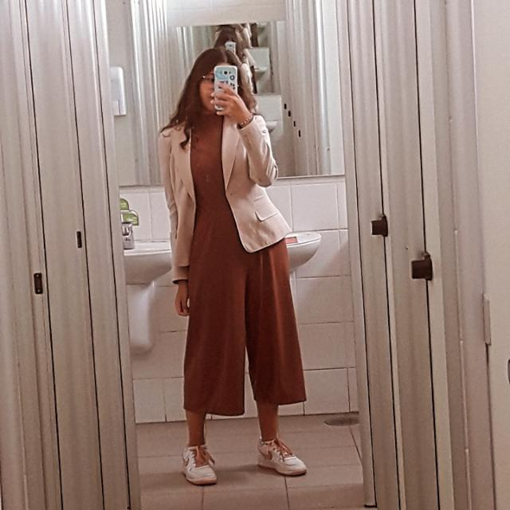
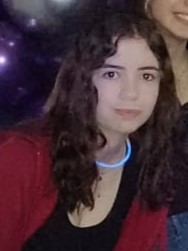
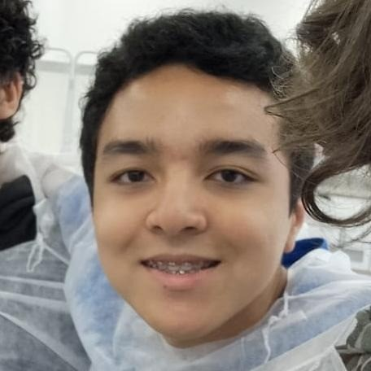
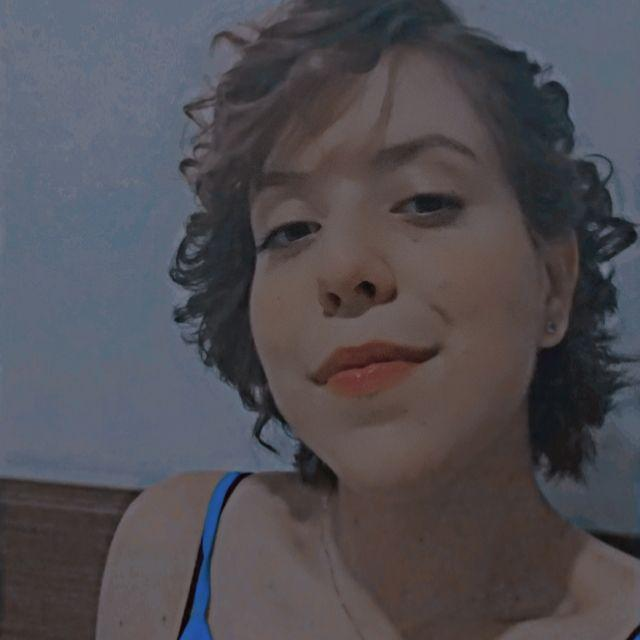

Objetivo
------------------------------
A equipe WaveRiders tem como objetivo desenvolver um CubeSat para monitorar e estudar as condições dos oceanos, incluindo o monitoramento de pesca ilegal, fornecendo informações valiosas para a gestão costeira e marítima.
Nosso objetivo é contribuir para a proteção e preservação dos nossos oceanos. Através do uso de CubeSat, buscamos aumentar a compreensão e a capacidade de monitoramento dos oceanos, incluindo a pesca ilegal, para tomar medidas eficazes para garantir sua saúde e bem-estar a longo prazo.
Equipe

Ana Vitória

Beatriz Souza

Felipe Koji

Sophia Moreira